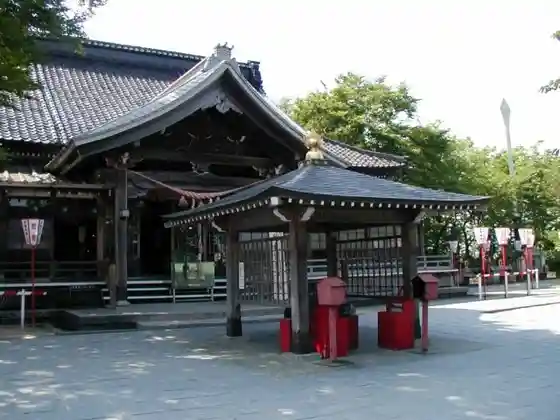
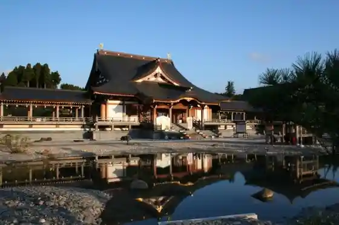
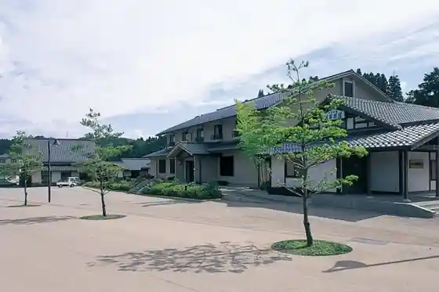
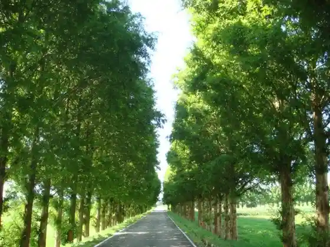

Kurikara Fudo Tera Sancho Hondo
Tsubata, Ishikawa · 076-288-1451 · Official / source link

Kurikara Fudo Tera Nishi Yuki Bo Ho Dono
Tsubata, Ishikawa · 076-288-1828 · Official / source link

Kurikara Genpei Kosenjo
Tsubata, Ishikawa · 076-288-6120 · Official / source link
Roadside Station Kurikara Genpei no Sato Kurikara Juku
Tsubata, Ishikawa · 076-288-8668 · Official / source link

Kahoku Kata Kantaku Chi no Metasekoia Namiki
Tsubata, Ishikawa · Official / source link

Kahoku Kata
Tsubata, Ishikawa · 076-288-4424 · Official / source link
Tsubata Kodomo Science Museum
Tsubata, Ishikawa · 076-288-7146 · Official / source link
Himawari Village
Tsubata, Ishikawa · 076-288-4424 · Official / source link
Ishikawaken Forest Park
Tsubata, Ishikawa · 076-288-6449 · Official / source link
Rekishi Kokudo (Hokurikudo Kurikara Toge)
Tsubata, Ishikawa · 076-288-6703 · Official / source link
Shinkansen no Mie Ru Oka Park
Tsubata, Ishikawa · 076-288-6703 · Official / source link
Ki Kubo Otaki
Tsubata, Ishikawa · 076-288-6120 · Official / source link
Kinshu no Hi
Tsubata, Ishikawa · 076-287-1001 · Official / source link
Kawa Ai Village Kinschule
Tsubata, Ishikawa · 076-287-1086 · Official / source link
Habu Farm Pezan
Tsubata, Ishikawa · 076-289-6287 · Official / source link
Roadside Station Kurikara Genpei no Sato Takebashi Kuchi
Tsubata, Ishikawa · 076-288-1054 · Official / source link
Tsubata Furusato Rekishikan
Tsubata, Ishikawa · 076-288-2101 · Official / source link
Taki no Tani Reisui
Tsubata, Ishikawa · 076-287-1001 · Official / source link
Tsubata Joshi
Tsubata, Ishikawa · 076-288-2125 · Official / source link
Kuze Shuzo Mise
Tsubata, Ishikawa · 076-289-2028 · Official / source link
Tsubata Kanko Boranteiagaido (Tsubata Furusato Tanteidan)
Tsubata, Ishikawa · 076-288-6120 · Official / source link
Tsubata Town Hall
Tsubata, Ishikawa · 076-288-2121 · Official / source link